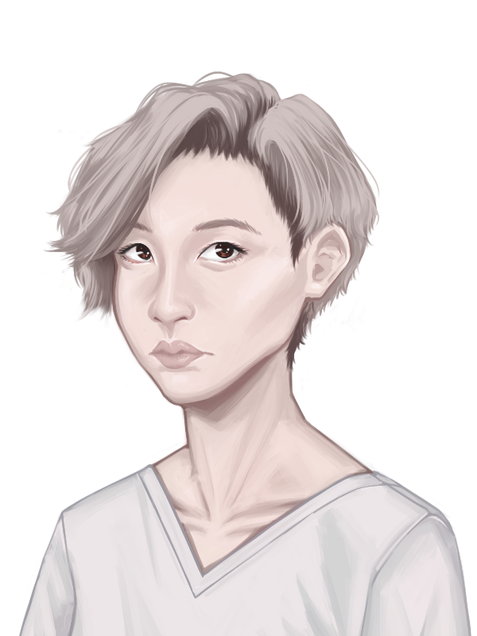

This is a chapter reveal for book 3 of my Melody Harper series, but something which really goes to the heart of what I write about, while also being able to stand up by itself.
From a writer's perspective, it’s also interesting to analyse how this chapter changed a lot of threads in my book that I had planned.
Like many authors, I often created ‘doomed characters’ who I’ve created and are set to die. UNLIKE many authors, as I play around with the characters, I often find better ways to use them, and end up creating more inventive ways of using them.
Eddie, the homeless guy, was one such invention. In book 3, Julia is visiting the Earth with her girlfriend, Melody, for a short while. Julia forms an odd friendship with Eddie, but finds the idea of homelessness hard to deal with–how can a society just ignore people who are so obviously struggling? She’s only ever known life on her Lunar colony, and although not perfect, they don’t leave people behind. This social commentary of literally ‘an alien on Earth’ is the heart of book three.
Eddie is based on a mix of a couple of homeless people I’ve known over the years, especially Blanket Man in Wellington. Ben Hana (aka Blanket Man) is believed to have started living on the street as a form of penance after a drunk-driving accident where he ended up killing a friend.
I had originally planned for Eddie to be killed by a neo-Nazi group, The Knight Crusader, and for a lot of his backstory to come out at his funeral. When I heard John Lennon’s “So This Is Christmas” , I realised just how triggering that song would be for someone who’d lost friends in a war.
I wanted to cover how difficult PTSD is, and how bad The Uranium Wars, especially with a war building up in the fictional world (book 4 is called Melody Harper’s War).
But there are also no easy answers. Eddie survives the book series, but when Julia heads back to the Moon, he is still homeless and still has his PTSD. The book series accepts there are no simple answers.
As Julia tells him before she heads away, “You’re important to me. Up there I’ll be looking out at Earth. And I want to imagine it’s a better place because you’re in it.”
Check out the companion piece, A Lunar Perspective .
So this is Christmas?
15:53 Saturday 25th December 2083
Christmas on Earth—who’d have believed it? It’s been a crazy, busy day, Violet!
Dylan had picked up the mood of what a special day it was and jumped into our room practically bouncing on the bed saying she wanted to see what presents we’d got her. With shock, I checked the time, and it wasn’t even 06:00 yet!
Melody just broke into laughter telling me, “Welcome to Christmas on Earth. I was much the same.”
I persuaded Dylan that we’d have to wait, “Jessie’s sleeping in the living room, and Ernie’s old and needs his sleep. So why don’t you come into bed with us for a while?”
She bounded into bed between Melody and me, talking about how exciting it all was. Melody managed to stretch over to give me a kiss, and wish me a Merry Christmas, with Dylan following suit.
How life has changed! Last Christmas I woke up a little late and more than a little hungover. I hung out with our friends and played a little Lunarball before the big meal.
This year I woke up in bed with the girl I adopted, the woman I loved, and inside her the baby she’s having for two of my closest friends. They don’t make many Christmas movies about families like ours, but they should. We are a family none-the-less.
We stalled until after 07:30, but a little girl was impatient. Melody knocked for Ernie, and I sent a message as a forewarning to Jessie before we headed down on the stairlift.
Jessie had managed to tidy up where they were sleeping, open the curtains and was looking resplendent in red flannelette pyjamas and a dressing gown. Well, all of us were wearing dressing gowns, but theirs looked the kind of upmarket item that you could imagine Sherlock Holmes smoking a pipe and playing the violin badly in.
Jessie gave us each a hug, wishing us a Merry Christmas. There would be a lot of this during the day, repeated when Ernie came downstairs—he was the only one of us who’d bothered to get dressed. He had a strong scent of his aftershave, so had somehow found the time to manage the quick wash that had eluded the rest of us. I hadn’t even been able to brush my teeth, with even my visit to the toilet had been under Dylan’s watchful eye.
Dylan looked at the presents under the tree and asked if they were all for her. I know in movies you’ll see a giant pile, but this was just three sizeable items and a collection of smaller ones. But to those of us from the Moon, they were more gifts than we’d see over a number of years.
She opened Ernie’s first, it was a massacre of paper going everywhere, and she squealed at what was inside. I’d like to say it was a doll’s house, but it was more a doll’s bungalow. Melody had warned me Ernie had got ‘technically one’ present. And sure enough, there were a collection of smaller gifts which included a small family of dolls, some furniture and even a matching couple of vehicles. Of course one of those vehicles was a camper van.
Dylan was delighted to find that the dolls seemed to match up with us—a girl, two mothers, and a grandfather. Ernie had even got a tiny Christmas tree for the house, so it was like watching miniature versions of ourselves celebrating their own Christmas.
As Dylan happily played, Jessie played the sort of guest you adored having over and made us all a cup of tea. I would have loved coffee, to be honest, I felt it was going to be a long day on this early start. I had no idea at the time how accurate that premonition was.
Melody eventually asked Dylan if she wanted to open the present she’d got her. At first, it looked like a reasonably sized teddy bear, and then it moved. Let me tell you, for a moment I thought we had a possessed toy on our hands.
The bear looked at Dylan and said, “Merry Christmas Dylan, I hope you’re enjoying your day.”
Dylan asked how it knew her name, and the bear told her that Melody had told her all about her.
Melody later explained it was a Buddy Bear, a robot teddy bear companion, and she’d been programming it to recognise Dylan as its owner. They had a host of features they could do like walk and climb, talk to you in basic sentences, tell you a story; they also could watch over you when you slept, monitor your sleep and raise alarms if you had problems.
It all sounded very sensible, but there was still something unnerving about it. Though we have drones on the Moon, we keep so far away from them, and certainly, my recent experience with that police drone hasn’t done wonders for my feelings about them. Dylan loved him though and asked him all kinds of questions and officially naming him ‘Bobby’ when the bear asked what name he’s to respond to.
Finally, it was the turn of my gift. I have to admit to confiding with Jessie for my original planned present—it was just going to be a handwritten note to Dylan telling them I’d always be there for them. Jessie laughed at that when I told them a few weeks ago, telling me, “That’s not going to cut it. I know any other day it would mean the world, but Christmas kids get very materialistic. SHOW ME THE PRESENTS!”
Jessie had taken me on a tour of shops; we looked at a lot of things, from building block sets to film tie-ins to space ships. They had a playset which promised ‘live out the thrills of life on the Martian colony’, but not a corresponding one for Lunar life. Typical, we really are seen as the less glamourous colony.
I wanted something which would last and something we couldn’t manufacture on the 3D printers back on the Moon. We settled for a ‘civil engineering Barbie’ doll set, which came with a JCB excavator drone that you could control from a CompPad. There were all kinds of software to allow you to program it.
Dylan looked a little unsure about it, but Jessie came to the rescue, “Do you know what’s cool about this? When Julia and I are busy doing our assignments at college, you can play out what we’re up to.”
That made Dylan laugh, and Jessie proceeded to show her the kinds of things we do when we’re surveying. That engaged Dylan’s enthusiasm, even though technically Jessie and I have only done the one assignment to date. But Jessie wasn’t going to let that get in the way of a good story.
Dylan managed to rope all the toys together into her play—she was building foundations for an extension for the doll’s bungalow and telling Bobbie bear all about her plans. There was something just entertaining to watch her play and see where her imagination took her, but it wasn’t to last. Melody checked her CompPad and told me we needed to get dressed as she was taking me somewhere for my surprise. She told me I might like to wear my Lunar coveralls.
Twenty minutes later we’d had time for limited ablutions (my bossy princess told me I didn’t have time for a shower though) and were ready to go.
It was just Melody and I who headed out in the Mercury; the rest of the family were going to hang around the house and sort out dinner. Once underway, Melody admitted that we were heading to the town hall. It’s a beautiful old red-brick building which looks like it should really belong to some Bavarian prince.
I asked what this was all about, and Melody explained to me, “I know you have some trouble with how we are down here. I wanted to show you another side to us. At Christmas, the local mission runs a Christmas meal here, and we’re going to help them. It’s for local families who struggle or people who find themselves at Christmas alone. Anyone who needs it.”
I felt a little bad about that, that Melody felt that I didn’t like it here on Earth. I mean, I’m looking forward to going back to the Moon, for all its faults it is home and where I feel I belong.
I do appreciate my time here, and I told her as much. But I have to admit that I was also intrigued.
Melody told me they started serving in just over an hour; there already seemed to be quite a queue at the front doors. I wanted to use my walking frame, but she persuaded me to use my wheelchair, and we zipped to the side entrance where we were almost immediately challenged by a fussy and fierce grey-haired lady who told us that we should be queuing outside the main entrance. Melody defused her a little by showing her a message on her CompPad and explaining we were volunteers. The door guardian shot us both withering looks before allowing us in.
The kitchen we entered was a hive of activity, and Melody asked around a few times before she found the person she was after.
“Marcy? Hi, I’ve been messaging you. My girlfriend and I are here to help out with service,” Melody explained to a much more friendly looking woman, proceeding to show her something on her CompPad. “Now, obviously, I don’t have food hygiene certification for the region, but Chef Stephen who I work under at Shackleton Colony has written up a reference on my skills. I should be able to help out in the kitchen. My girlfriend, Julia, should be able to work on serving.”
Marcy beamed at both of us, “I’m delighted to have you both aboard. It’s all a bit hectic, and we could have done with you an hour ago, to be honest. But somehow we always make things work out. Melody, we could do with you in the kitchens. They’ve fallen behind in vegetable prep from the screams I’m hearing.
“And you, Julia? I’m going to pair you up with one of our regulars who’ll show you the ropes.”
She called over a lady who was a little older than us and introduced her as Roza.
“Merry Christmas, and welcome to the madhouse,” Roza joked, taking me away from the kitchens. “So is it true what Marcy was saying? Are you and your partner really from the Moon? You’re not cosplaying in that uniform, are you?”
I assured her I wasn’t; I was a genuine first-generation Moonchild.
“Damn, that’s incredible. And you’ve never visited Earth before?” she asked, and I assured her I hadn’t. You didn’t just forget things like that. “That’s bloody incredible. I need to get your contact details.”
She took me to a giant hallway which was filled with empty dining tables. It was impressive, but to be honest, it was also somewhat drafty. Roza led me to a series of serving tables that we’d be dishing up from behind.
Along the way, Rosa explained that she worked for the local newsgroup and was here every year covering Christmas mission meal.
“It’s always a popular piece,” Roza explained, “I mix with people, find out their stories. People love that kind of human interest at Christmas. Talking of which, what’s with the wheelchair? A terrible accident on the Moon?”
I assured her I could walk, I was just too weak to most of the time, “Welcome to a lifetime of one-sixth gravity. I can walk and stand, but it’s very tiring for me. It can make me feel faint if I do it too long.”
“Interesting, I’ve heard about you weighing less on the Moon, but never thought of the reverse case before,” Roza said. I felt she was making mental notes for a future story as she did. I think nothing I’d say today would be off the record. “My advice though, stay in the wheelchair today. The mix of people who do the volunteering here are as diverse as the ones who need a free meal. Some are lovely people who just want to help people who’re in a difficult place.
“But there are some who I wonder why they bother. They seem to be only here to practice judgemental superiority over the ones that come in. ‘Oooh, I don’t know why they’re here, I saw their son has a CompPad which isn’t a trampled piece of trash’. If they see you able to get out of your wheelchair, they’ll be gossiping ‘did you see her? She’s not even a proper cripple. Bet she’s doing it to cheat some benefit, we should report them’.”
I told Roza that she seemed to know a lot about this personality group, and she laughed, explaining that, “Well, I’m a reporter. Ninety percent of my leads are just people who want to report their neighbours for petty reasons. ‘We have a hosepipe ban, and they’re watering their plants. The Police aren’t even taking me seriously’. Every once in a while, things are so slow that you have to pick up one of their stories. So what do people argue about on the Moon? There must be something?”
I took a cautious breath and explained, “Oh, we have things we can get petty about, but I really can’t tell you much about it. We have a clause about damaging the reputation of the colony, which can get us exiled back to Earth, and I’d rather not risk it.”
Something tells me that if Roza knew that an expose on the sexual activities of Shackleton Colony had just slipped through her fingers, she would have fallen to her knees and wept.
In amongst all this, she showed me the serving tables we’d be using, when to call out because you were running low on an item (I’d be dishing out vegetables) and notes on how much to give out so that it would go around.
“I saw you met Joan on the door and she gave you her ‘riff-raff wait in the queue with everyone else’ charm. You can guess which of the personalities I was talking about she belongs to. I once saw her reduce a server to tears because she gave someone four Brussel sprouts instead of the regulation three. So consider yourself warned. People have put in complaints about her attitude before now, but they’re usually met with ‘oh no, Joan’s helped out for years, she’s part of the heritage’.
“Fun fact, I’ve been here for years, and Joan has done a lot of bossing around, but I’ve never seen her getting her hands dirty. She probably runs some kind of auditing software to count all the peas.”
I managed to adjust the seat on my wheelchair so I could serve adequately from behind the table as the first serving dishes of vegetables were brought out from the kitchen. A few other people came to join us, each with a different station—Roza told me the prime spot was dishing out the turkey, which had been pre-sliced with the red and white meats mixed up. The other volunteers were a mix of ages, but more women than men, I noticed.
Our door warden, aka ‘Joan’, appeared to give us a lecture before the first people came through, “We’re about five minutes from opening the doors. It’s really great to see you volunteering to make this happen; it means a lot to the local community and helps the unfortunates. But just remember, don’t take any messing about from them. Half of them will take any opportunity they can from sneaking a second meal to trying to send their kids to get an additional toy. Every time someone gets away with things like that, it’s another unfortunate left unfed and some such. We have some security present, don’t be afraid to use them. Kick them out fast.”
There was more, a lot more, but I can’t bring myself to write it all down. It just droned on. It was all rules to follow ‘or else’. I had the impression that though we were all volunteers here, she’d like to have any dissenters shot.
At the end of it all, I lent in to whisper to Roza, “And don’t forget… Merry Christmas!”
Roza giggled at that, Joan must have noticed something because I got a glare, but I just ignored her.
“She is what we call a professional lemon sucker,” Roza replied.
A sound system started up, and a collection of Christmas songs started to play. They’d be a source of problems later on.
Marcy came in to tell us, “We’re about to open the doors now. You can remove the lids from your food, but be careful. They’re kept heated, so can singe you if you’re not careful.”
Roza and I donned our serving gloves and, in almost synchronised perfection, removed our lids. The damn things were so heavy.
Roza asked me what I got, and I told her Brussel sprouts and peas. She got roast potatoes and carrots.
There was a sound of a large set of bolts creaking back and heavy doors scraping the floor as they were pulled open as someone shouted for people to hold on. A scramble of human beings broke through and made their way to the doors. At the front, a group of dishevelled kids ran and vied with each other to be first, only to be stopped dead from a glare from Joan.
She picked out one dirty-faced boy in particular, asking him, “Didn’t we have trouble with you last year?”
“No, not me ma’am, must have been my brother. Looks a lot like me, and he’s trouble. He’s not with us this year,” the boy said cheekily, and one of his friends laughed. I have to admit; I was rooting for that kid in the exchange.
The initial rush gave way to more order as people grabbed a tray and made their way down the line. Frequently, there were exchanges of ‘Merry Christmas’ with each server.
In many ways, this wasn’t so different to the experience we get having our meals served at the canteen back home for our Christmas, and I liked that. People were served and headed to where there was space at a dining table.
Joan had called them ‘the unfortunates’, and the way she said it was hateful. But it was a good description. There were families where it was obvious the clothes on their backs had all seen better days. There were people who arrived on their own, occasionally found a table amongst people they seemed to either know or could break the ice with. But a lot of them just ate alone and eventually left alone.
It was easy to scrutinise those who didn’t look so shabby, to adopt the Joan mentality to question if they needed to be here. Still, I remember reading A Tree Grows In Brooklyn and how that family was desperate at times, but often tried to put on a brave face to the rest of the world. For pride.
Maybe there were people here who didn’t need to be, but there were also a lot of genuine cases. No system was perfect. Would you deny the support to those who really needed it just for fear of the odd person abusing it? I think Joan would.
Somewhere a man in a poorly fitted Santa Claus outfit was making a lot of noise going around tables and handing out gifts. He often had to adjust his ‘belly’—which was obviously a cushion or padding of some kind—between tables. But he seemed to be warmly greeted and delivered on the jolly aspect.
Roza saw that it had captured my attention and explained to me they collected gifts, and every child got a present. They weren’t exciting presents, but it was something.
And then I saw him. A part of me hoped he’d be here, it was Eddie.
“Lunar Girl,” he called out. “You the keeper of the Brussels?”
I risked the wrath of Joan and gave him four Brussel sprouts, asking him how he was. He seemed relatively more upbeat than usual.
“Never say no to a free meal, Lunar Girl, it beats looking for one in the bins,” he laughed, baring his rotten teeth and wishing me, “Merry Christmas.”
He took a seat on his own, but looking over his way, I saw people did go up to him occasionally.
“Wow, so you know Eddie? He’s one of the colourful locals, quite the backstory,” Roza said after he’d passed.
“Yeah, he saved my life. I got zapped by a police drone, and it stopped my heart. That’s my third brush with death this year, I’m glad there’s only a week left,” I joked, and immediately felt I’d said too much.
I wasn’t comfortable talking about how Livia had set up a lynch mob for me and almost threw me out an airlock, and it was far too dangerous to talk about how my psychopath geology teacher tried to kill me to punish my girlfriend.
Roza was looking at me to elaborate, so I did my best to defuse a drama of my own making, “Well I’ve started working civil engineering on the Moon, and it means going out a lot, and I’ve made a few mistakes.”
It all got forgotten as a moment later the tannoy started to play a song which began ‘so this is Christmas’, to which Roza’s reaction was, “Oh, shit! I thought they knew to remove this from the list.”
It only took a few bars, and there was the noise of a chair being scrapped along the floor and someone yelling out, “What do you know? What do any of you fucking know? You don’t know shit!”
It was Eddie, and he was standing up and seemed to be having a fit as he screamed abuse at everyone. After another tirade, he flipped over the table he was at, and there was a clatter of food and trays going everywhere.
Everyone was backing off from him except me. I zoomed my wheelchair around to get close to him.
“Just fuck off, just all of you fuck off,’” he bellowed. Someone finally managed to stop the song which was so obviously antagonising him, which cut out after the lyrics, ‘war is over if you want it’. There followed absolute silence, no music, no talking. Everyone’s attention was on him.
“Hey Eddie, this isn’t you,” I reassured him, trying to calm him down and embrace a softness to my voice. “It’s okay. You’re the man who saved my life; you’re a good person,”
It seemed to hit a nerve, but not in the way I wanted. He started to wail as he clutched his head, seeming to spasm as he did.
“No, no, no, no, no,” he kept repeating. “Not a good person. Not a good person.”
“You saved my life just a few weeks ago. That meant everything to me, my daughter, my girlfriend,” I said, trying to keep my voice as calm as possible.
I thought I was getting through to him. He seemed to be calming down, but this just seemed to be the signal for Joan to jump in with, “Just look at what you’ve done. And you’ve been warned before.”
“Oh, just fuck off Joan,” I told her. I did not need this kind of help from her.
Someone in the audience called out in support of Eddie, “You know what he’s been through, you heartless bitch.”
That elicited a round of applause. It seems Joan wasn’t popular with ‘the unfortunates’.
Eddie just looked startled, and I suggested, “Hey, why don’t we just go outside and talk a bit, huh?”
It actually didn’t have to come to that. As we were leaving, Marcy suggested we head into one of the waiting rooms, where things were quieter. He sat and hung his head, and I asked him if he wanted to talk about it, and he abruptly replied me, “No.”
I told him I was okay with that, so just sat with him. I asked him if he felt a little calmer, and he nodded.
Roza came in with a tray with a replacement meal; he asked if it was the food he’s knocked on the floor.
“It’s fresh, don’t worry,” Roza assured him.
“I’d have been okay with you serving me the food I knocked over. I know I shouldn’t,” Eddie said, eating his meal with his fingers.
“You’re not an animal, Eddie,” I said, and I immediately regretted it. The way Earth society seemed to force him to live, he might as well be. “We all have things which trigger us. We have a friend who turns into a ranting maniac for a week any time Brazil loses at football.”
That brought a moment of much-needed levity.
“Fucking football. Get used to disappointment,” laughed Eddie. “I got used to that, supporting the local team here as a boy. They’re crap.”
We talked about football a bit. I told him about Lunarball back home. Just normal stuff. He seemed to need to talk about everyday things.
“You’re really good with him. He’s a good guy when you get to know him. Sad story though,” Roza explained as we left him to finish his meal in peace.
I felt confused and said as much, so Roza explained, “He’s a veteran from The Uranium Wars, that song ‘Merry Christmas—war is over’ was reissued after the wars, and it’s just very triggering for him. The area had terrible unemployment, and a lot of people joined the army to find some kind of career. He joined with his two best friends.
“They were outside Johannesberg when it got hit by the nuke and took massive casualties in the aftermath. He was the only one of his friends to survive it all, and it’s part of his problem. You can tell he struggles with some kind of post-traumatic stress. But he’s fiercely Catholic, and the whole homeless thing is some kind of personal penance for surviving the war when they didn’t. He feels it’s his cross to bear.”
“Shit,” I had to swear at that, “I don’t know what’s worse, that he was put into that place during the war, or that he was abandoned so easily by your society afterwards.”
“It’s funny to hear you say that,” Roza said and asked me to elaborate.
“We just live differently on the Moon. In many ways much more frugally than you do. But at the same time, we don’t leave people like Eddie behind,” I explained. “My girlfriend brought me here because she wanted to show me the generosity of Earth society at Christmas.
“You know I look at all those people in the hall, and especially at Eddie. And I think we did something amazing feeding them today. But what happens tomorrow?”
“Well, social services and charities pick up where they can,” Roza said.
I asked if that was enough because, from what I’d seen to date in Eddie’s case, it wasn’t.
“This is why I’d love to work with you on something. You are literally an alien descended from space and looking at us through a different set of values; it’s the kind of thing I live for. The weird, not always flattering reflection we cast,” Roza pitched. “A lot of good could come from it.”
She wasn’t going to let me wriggle out of it. I told her, “Look, maybe, that’s all I’m saying right now. I’ll need to be able to have refusal about anything published, and we need to have some off-limit topics.”
Marcy was waiting for us in the hall, and asked to have a quick word, “Joan has put a complaint in about the language you used to her. She found it very upsetting. We have a zero-tolerance for people being abusive, so we’d like you not to return to serving. Thank you for your help today, though.”
I tried to point out that Joan was doing a good deal of bullying herself, but Marcy wasn’t listening.
“Oh, that’s a shame,” Roza said with a certain wile in her tone. “Julia here just agreed to work with me on a story about her perceptions of life on Earth as a girl off-world. I guess that means I’ll have to cover that she was dismissed as a volunteer and the reasons why. But people love stories like that.
“It gets even better because the ‘unfortunate’ as Joan calls them that Julia here was trying to prevent was responsible for saving Julia’s life. Also makes for a great story. I’d better go around and get some eye witness statements if we’re going down that route. Would you like to make a comment now about this or more formally later Marcy?”
Marcy was a little flustered, but I thought she recovered pretty well, “I suppose as we’re still a little shorthanded, it might be best if you stayed to help us after all, Julia. But consider yourself warned. Please no more repeats of that behaviour.”
“Oh, I won’t start anything if Joan doesn’t,” I said, but Roza pulled me away before Marcy could retort. I smiled my best ‘fuck you’ smile for Joan as we passed her and took my place back with the Brussel sprouts.
The rest of the service lacked drama apart from calling out when the peas or Brussel sprouts were running low. And before too long, the queue became less and less, until it was gone. The great doors were shut over, only to be opened as the diners slowly filed out.
Marcy came around to inspect what was leftover, “Every year I worry we’ll get the numbers wrong and have to turn people away. We take anything that’s left over and cook it up tomorrow with some eggs as a breakfast for the homeless. Good work everyone. I know there were some dramas to contend with.”
A tired Melody came out of the kitchen, uncovering her head.
“Damn, it feels like forever since I’ve had to wear a hat and hairnet in the kitchen. I’m glad Grandad’s looking after our dinner, but I might need a foot rub tonight, my love,” she said, bending down and giving me a kiss.
I properly introduced her to Roza and finally exchanged contact details with her.
We got out to the car and saw Eddie sitting a little agitated on a nearby bench. He came over, telling me, “I just wanted to say thanks. I thought I was going to get banned. I… some things just… make thing go crazy in here.”
He tapped the side of his head.
“You know, you try to look after yourself, Eddie. I’m glad you got that meal,” I managed to stand up out of the wheelchair, and come in to hug him. I’m not going to lie; it didn’t smell of roses. But for all the odour that came with him, he was a human being just trying to do his best in difficult circumstances.
Melody dashed to the car, opened the boot, rummaging around for something.
“I hoped we’d see you on our rounds,” she said, passing him something wrapped in tin foil. “They’re just some leftover sandwiches we had from last night. Merry Christmas.”
He returned the best wishes, and we watched him wander off before getting back into the Mercury.
“Thank you,” I told Melody. “That was interesting, but I hope you don’t think I’m going to be volunteering for the kitchen when we get back to the Moon.”
She laughed at that, and I got a kiss.
When we got back, Ernie told us dinner was two hours away and his guest was on their way. He pulled me aside to tell me Dylan was upstairs having a bit of a nap.
“She was having a good time, but… you know Christmas can be a hard time when you’ve lost someone. We had a bit of a talk, and she just wanted to lie down for a bit. She’s in her room,” he explained.
That’s where I found her, curled into a ball, but still awake. I tried to gently lower myself onto the bed next to her, and she turned to give me a desperate hug. I rubbed and patted her back.
“I was so excited over my presents. I just wanted to tell them about them, and it made me feel sad,” she sobbed.
Guilt crept into me, I was off feeding others and feeling I was helping out, but really I should have been here for her.
“Ernie says it’s okay to miss people; he was missing his wife and his daughter today. I didn’t know he had a daughter,” she said.
I relayed what I could remember of the story of Marge, “He wasn’t her parent biologically. Just things happened, and she needed a home, and he looked after her. A bit like with you and me.”
I awkwardly loosened the laces on my Doc Martens to take them off before I got on the bed to lie down next to her. She squashed up and cuddled next to me.
I gave her room to say anything she wanted to, but she was just silent. I wondered a few times about asking her what she was thinking, but you didn’t have to be a therapist to work it out.
Eventually, I realised I wouldn’t get an answer; she was making soft grunting noises and had drifted off to sleep. I hoped it would bring her whatever she needed.
I lowered myself down on the floor so to avoid disturbing her and started to write up my day, as well as set a reminder on the entry—it will be good to reflect on this next Christmas when we’re home on the Moon again.
I just heard a doorbell, the muffled sound of Ernie greeting someone and introducing them around. It stirred Dylan, who suddenly became a little excitable, “That’s Ernie’s girlfriend. He told me she was coming over.”
“Do you want to go down? It’s okay if we stay up here a while if you’re not up to it. They’ll understand,” I said.
But Dylan was eager to meet the visitor. Though we knew he’d invited someone, he’d certainly not described them to Melody or me as someone he was dating.
We headed down on the stairlift to meet the mystery woman. Little did I realise that I’d already met her...